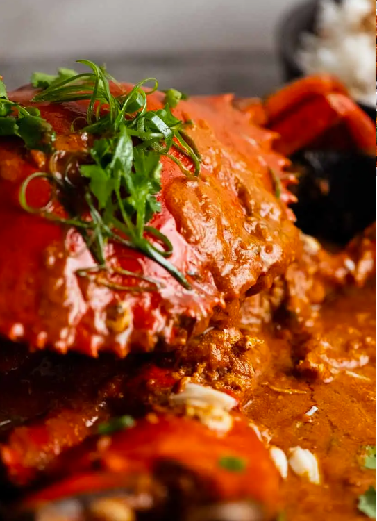

Chili Crab

For 2 servings
Ingredients:
- 1 mud crab
- 3 shallots
- ginger, 1 in (2.5 cm)
- 3 long red chillies
- 5 cloves garlic
- 2 tablespoons ketchup
- 1 teaspoon shrimp paste, belacan
- 2 tablespoons cooking oil
- 1 ½ cups chicken stock(360 mL)
- 1 ½ cups tomato puree(335 g)
- 1 tablespoon rice wine vinegar
- ½ cup sweet chili sauce(120 g)
- 2 tablespoons soy sauce
- 2 tablespoons palm sugar
- 1 egg
- 1 spring onion
- ½ cup butter(50 g)
Preparation:
- Prepare the crab by removing the base flap, then pull off the head and clear out the cavity. Keep the head in a bowl. Moving to the body of the crab, remove the gills, which are an opaque brown colour on both sides of the crab. Using a sharp knife, cut the crab in half down the middle, then divide into six parts. Using the knife, crack the crab legs open to allow the flavours to enhance while cooking. Add to the bowl with the head then set aside.
- In a food processor, add shallots, ginger, red chillies, garlic, ketchup, and shrimp paste, then pulse until it comes together and forms a paste.
- Heat oil in a wok over medium heat, then once it comes up to temperature fry add the chilli paste and cook for five minutes, stirring occasionally.
- Add the crab pieces into the wok and stir until they are fully coated. Give the crab time to start turning orange, approximately 5 minutes.
- Add the tomato puree, chicken stock, rice wine vinegar, sweet chilli sauce, soy sauce and palm sugar, then stir until completely mixed. The crab should be fully orange by now. Add a lid on top and allow the mixture to simmer for 15 minutes.
- Remove the crab legs and head, and plate up on a shallow dish.
- Add butter, spring onions, and egg. Let the egg sit for a minute before stirring, then give the sauce a quick stir. The sauce should thicken up quickly.
- Pour the sauce on top of the crab and garnish with a few sprigs of coriander.
- Enjoy!
Main page
Singaporean Cuisine page